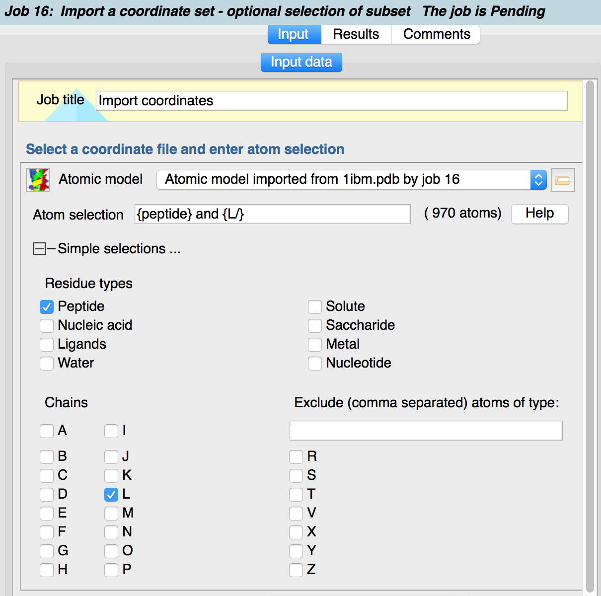

Many tasks allow you to select a subset of atoms of the input file to be sent to the job, e.g. jsut run the job with all peptide atoms of chain A. To do this click on the "+" next to "Simple selections". In the "Exclude atoms" box, things such as "H,P,Se" can be used to exclude atoms of those types from the job input.
